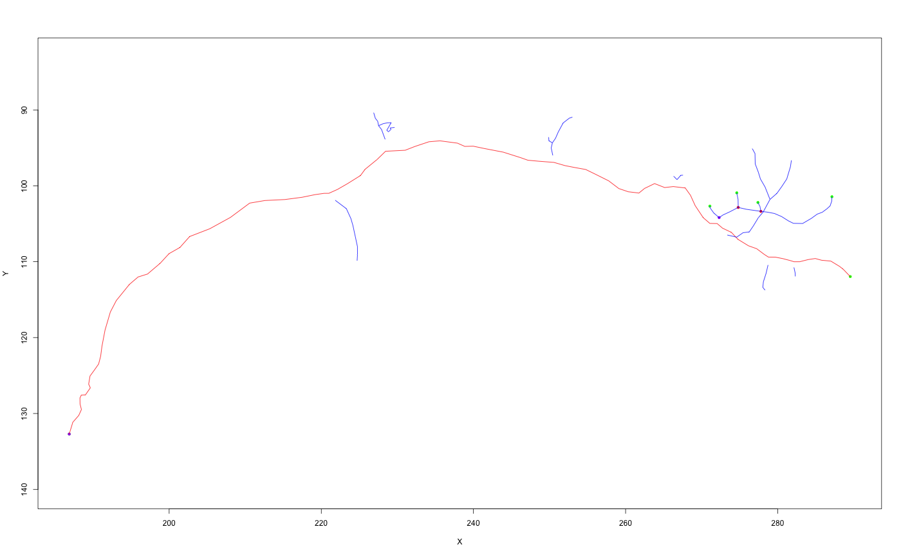

the ngraph class contains a (completely general) graph
representation of a neuron's connectivity in an igraph object. It
may additionally contain vertex name or position data. See Connectivity
section.
ngraph() creates an ngraph from edge and vertex information.
as.ngraph converts an object to an ngraph
as.ngraph.dataframe construct ngraph from a data.frame
containing SWC format data
as.ngraph.neuron construct ngraph from a neuron
ngraph(el, vertexnames, xyz = NULL, diam = NULL, directed = TRUE, weights = FALSE, vertex.attributes = NULL, graph.attributes = NULL) as.ngraph(x, ...) # S3 method for data.frame as.ngraph(x, directed = TRUE, ...) # S3 method for neuron as.ngraph(x, directed = TRUE, method = c("swc", "seglist"), ...)
| el | A two column matrix (start, end) defining edges. |
|---|---|
| vertexnames | Integer names for graph nodes - the edge list is specified using these names (see details). |
| xyz | 3D coordinates of vertices (optional, Nx3 matrix, or Nx4 matrix when 4th column is assumed to be diameter) |
| diam | Diameter of neuron at each vertex (optional) |
| directed | Whether the resultant graph should be directed (default TRUE) |
| weights | Logical value indicating whether edge weights defined by the
3D distance between points should be added to graph (default |
| vertex.attributes, graph.attributes | List of named attributes to be
added to the graph. The elements of |
| x | Object to convert (see method descriptions) |
| ... | Arguments passed to methods |
| method | Whether to use the swc data (x$d) or the seglist to define neuronal connectivity to generate graph. |
an igraph object with additional class ngraph, having a
vertex for each entry in vertexnames, each vertex having a label
attribute. All vertices are included whether connected or not.
Note that the as.ngraph.neuron method always keeps the
original vertex names (a.k.a. PointNo) as read in from the original file.
We make the following assumptions about neurons coming in
They have an integer vertex name that need not start from 1 and that
may have gaps. This is analogous to the PointNo field of the core data
block of neuron objects.
The edge list that defines connectivity specifies those edges using pairs of vertex names, _not_ raw vertex indices.
We make no attempt to determine the root points at this stage.
The raw vertex ids in the graph will be in the order of vertexnames and can
therefore be used to index a block of vertex coordinates. The vertexnames
will be stored using the vertex attribute name. The underlying
igraph class allows nodes to be specified by their name. This provides a
convenient way to define nodes in an ngraph object by the numeric
identifier encoded by the PointNo field of the corresponding
neuron.
When the graph is directed (default) the edges will be from the root to the other tips of the neuron.
The morphology of the neuron is encoded by the combination of connectivity information (i.e. the graph) and spatial data encoded as the 3D position and diameter of each vertex. Position information is stored as vertex attributes X, Y, and Z.
igraph, set.vertex.attribute,
subset.neuron for example of graph-based manipulation of a
neuron.
Other neuron: neuron,
plot.dotprops,
potential_synapses, prune,
resample, rootpoints,
spine, subset.neuron
#> #>#> #> #>#> #> #>#> #> #>#> #> #>#> [1] TRUE# Use 3D segment lengths as edge length of graph gw=as.ngraph(n, weights=TRUE) # find longest path across graph d=get.diameter(gw) # make a new neuron using the longest path gw_spine=as.neuron(induced.subgraph(gw, d)) # make a new neuron containing all nodes except those in longest path gw_antispine=as.neuron(delete.vertices(gw, d)) # note use of bounding box of original neuron to set plot axes plot(gw_spine, col='red', boundingbox=boundingbox(n))